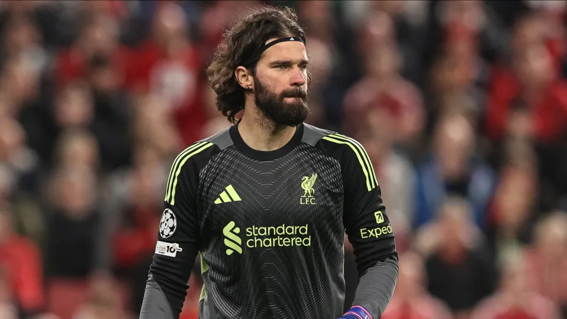
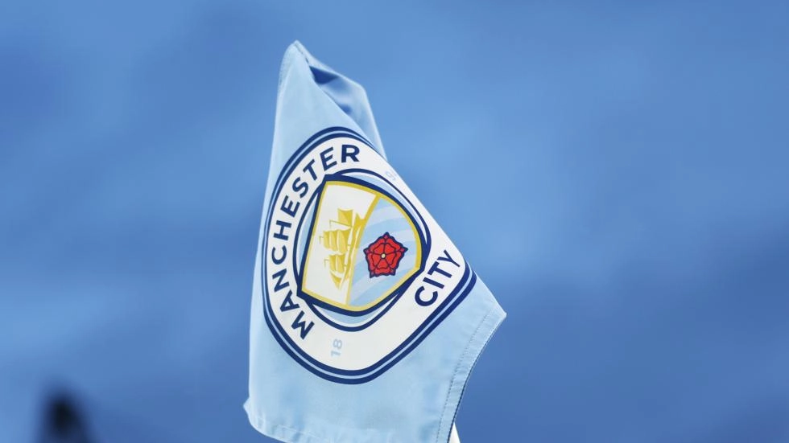
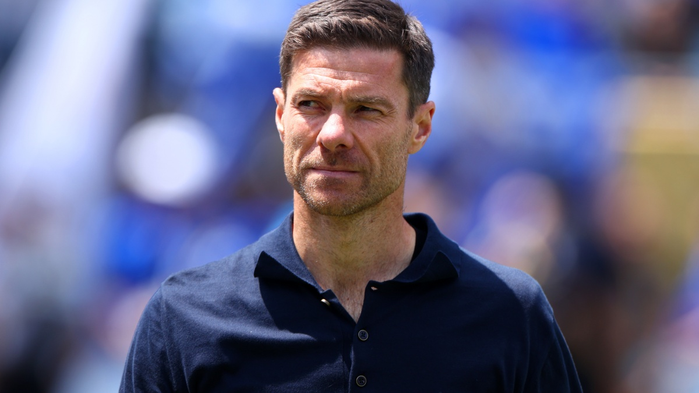

Liverpool confirma lesão de Alisson
03/04/2026
Goleiro do Liverpool segue fora por lesão muscular e desfalca jogos decisivos na
Europa.
O técnico Arne Slot confirmou que o goleiro Alisson Becker seguirá afastado por mais tempo
enquanto se recupera de lesão e só deve retornar no fim da temporada europeia, próximo à Copa do
Mundo.
Alisson está fora desde o duelo contra o Galatasaray, pelas oitavas de final da Champions League,
em março. No jogo de volta, o goleiro já não foi relacionado por conta de uma lesão muscular na coxa
direita. O clube não detalhou o problema físico, mas a lesão foi suficiente para afastar o jogador dos gramados e também da convocação da Seleção Brasileira na última Data Fifa.

Manchester City x Liverpool pela FA Cup, horário e onde assistir
02/04/2026
Liverpool viaja para o Manchester City nas quartas de final da Emirates FA Cup no
sábado.
A partida acontece às 8h45 (de Brasília), e quem vencer garante vaga nas semifinais da
competição.Local: Etihad Stadium, em Manchester, Inglaterra.
O Manchester City chega para o confronto contra o Liverpool após o título da Copa da Liga Inglesa sobre
o Arsenal. Na ocasião, o time comandado por Pep Guardiola venceu, por 2 a 0, no gramado histórico de
Wembley, e se sagrou campeão pela nona vez do torneio.
Do outro lado, o Liverpool vem de uma derrota, por 2 a 1, para o Brighton, pela 31ª rodada da Premier
League, onde ocupa a quinta posição na tabela de classificação. Por conta disso, o time comandado por
Arne Slot vê na Copa da Inglaterra uma das opções para salvar a temporada - a equipe também ainda
disputa a Champions League.
Data e horário: sábado, 04/04, às 8h45 (de Brasília).
Onde assistir: Disney+, ESPN;

Liverpool encaminha contratação de Xabi Alonso como novo técnico
31/03/2026
Ex-treinador do Real Madrid deve assumir o clube inglês na próxima temporada.
O Liverpool já faz planos para a temporada 2026/27. Com o rendimento abaixo do esperado na
Premier League, o comando de Arne Slot à frente da equipe inglesa parece cada vez mais próximo do fim.
De acordo com o jornal 'Bild', os Reds querem que Xabi Alonso assuma o time. Entretanto, o técnico impôs
a condição de que o início ocorra apenas em julho de 2026, quando as competições atuais já tiverem sido
concluídas.Apesar da exigência, o clube parece respeitar a decisão de Alonso e o mantém como um dos
favoritos ao cargo. Isso porque o espanhol, que já treinou o Bayer Leverkusen e o Real Madrid, tem forte
identificação com o time de Merseyside, devido à sua passagem marcante como meio-campista entre 2004 e
2009, além dos títulos conquistados.